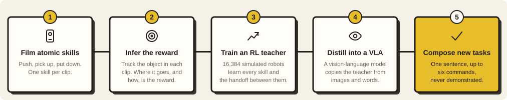

Composing multi-step manipulation from single-skill phone videos
6 commands
from one sentence, in order.
Trained on at most 2.
Front camera + wrist camera · 3× speed
The brief
Your own data, a robot in sim, a VLA or world model
“We're not looking for standard solutions, we're looking for how you think.”
Collected data plays a real role
Policy performance in sim
Simple, clear, no slop
What worked and what didn't
My choice: test composition, not imitation.
The question
Can a robot that only knows single skills do long tasks it was never shown?
H1 · Clips are enough to learn the skills.A reward built only from how objects move in my phone clips trains every skill and the handoff between two.
H2 · Skills plus handoffs compose.Trained on 1–2 commands, it runs longer sentences, because a long task is just more handoffs.
H3 · The missing piece is memory, and it can live in the sentence.The model writes its own progress into its input.
My data
Phone clips of single skills. Never two in a row.
Push
Pick up
Put down
Put on the other object
43
usable clips
12 push · 10 pick up · 21 put down
A real cube and a crisps can, with ArUco markers
→ each object's position and orientation on the table, every frame
What I tried first
Two dead ends before the method
1 · Fine-tune the VLA on single skills
Then prompt the combined task.
push 16 · pick up 0 · every combined task 0
2 · A motion vocabulary from the clips
VAE over clip motions; PPO picks skill + latent, each runs ~2 s open-loop.
stacking: 1/100 vs raw actions 99/100
Lesson: human data goes in the reward; control stays closed-loop.
Motion primitives: lifts the cube and holds it up forever.
Clips → reward
The reward is where the object goes, measured from my clips
8 corner keypoints of the commanded object follow the skill's path inside a 3 cm tube
3 cm = median deviation of my clips from their mean path
From the clips: lift ≈ 20 cm, place height, push direction, yaw change
One formula, 3 templates. Scores only the object, not the robot's body
Reward hacking
Every reward I wrote got hacked
Reward grasp + carry: toggles the gripper on the release threshold. 0 successes.
Reward distance to goal: pushes instead of lifting. 19/100.
Clip reward, problem 1: zero signal until first contact; 504 iterations of nothing.
Fix: gripper → object leg + random start pose
Problem 2: push solved by grasp-and-carry, 85/100.
Fix: lift penalty only during push → 0/100
The pipeline
RL does the trial and error; the VLA copies it

Teacher
PPO, Franka, Isaac Lab 16,384 robots in parallel
Sees exact object positions + current command · 1–2 commands per episode
Student
SmolVLA, 450M front + wrist camera + one sentence
No positions, no step counter
Distillation
4,500 teacher episodes, 32K steps. Three things mattered.
Smooth the teacher
The RL teacher slams commands back and forth; the student learned the average.
each step: new command / old motion
5% / 95%
Pair every scene
Same images, "cube" vs "cylinder". Only the sentence says which.
picks the right object
45 → 80
More pushes
The weakest skill. 3,000 paired + 1,500 push episodes.
push success
23 → 44
The memory problem
From the camera, step 1 and step 3 look the same
Whole sentence, no memory: keeps redoing the start. 0 of 6 in order.
Marks switched off: stuck on command one.
Memory in the sentence
The model writes “(done)” into its own input
pick up the cube(done), then put the cube on the cylinder(done), then pick up the cube← now, then put the cube on the target
One extra output, "is this step done?". Above 0.85 for 0.5 s → write "(done)". First unmarked command = do it.
Training trick: hide the 1–2 real commands in a sentence of up to 10.
push the cube to the target(done), then pick up the cylinder(done), then put the cylinder on the cube(done), then pick up the cube, then put the cube on the target, then pick up the cylinder
Current command lands at every position 1–10 equally often. At most 3 in front → 6 steps: 5/100.
Five ways to remember
Only memory written into the sentence holds up
What the model gets so it knows where it is
4 steps
6 steps
Nothing extra, just the whole sentence
1
0
Older camera frames + its own past actions
≈0
≈0
One command at a time, a script moves on when it says done
65
38
A counter in its input: “k steps done”
42
0
Its own “(done)” marks, written into the sentence
81
40
All commands done in order, out of 100 held-out layouts. Earlier rows are earlier versions of the same pipeline.
Results · 100 held-out layouts per task · all commands in order
Long tasks are composed entirely at inference
Task
Steps
Student (2 cameras + sentence)
Teacher
Pick up the cube
1
94
100
Pick up the cylinder
1
59
100
Push the cube to the target
1
59
100
Cube to the target
2
97
100
Cube on the cylinder
2
96
100
Cylinder on the cube
2
81
100
Push, then stack
3
62
94
Stack, then unstack
4
81
100
Restack
6
40
94
Stack and unstack, twice
8
0
100
Does it really use the marks?
It recovers, and it reads its own marks
Knocked away after it was done: goes back for it.
Dropped mid-carry: picks it up again.
Marking switched off → 4-step task 0/50
First two marks pre-written → skips to step 3, 42/50
Where the 6-step runs fail
Early marks, and the cylinder
Knocks the cylinder over at command five.
Marked done too early, so a step is skipped.
Where failures stop of 100 runs
step 5 · pick up the cylinder
25
step 4 · put cube on target
15
step 2 · put cube on cylinder
13
Why 8 steps is 0
“Done” reads the image, not the sentence
8-step task: after four real steps the marks run ahead and it stops.
60/100
stop at exactly 4 steps in order, with marks at 8 of 8
After step 4 the scene looks like a finished 4-step task.
The skills are fine. The done signal is the bottleneck.
Honest evaluation
Same model, same runs: the judge sets the number
12
strict check
1.5 cm, held 0.5 s
24
the teacher's own check
≈2 cm, held 0.3 s
40
headline, in order
5 cm, held 0.2 s
49
lenient
final scene only
When the student wrote “(done)” on a stack, the cube sat 0.7 cm high if the strict check agreed and 1.7 cm if it didn't. That's inside the teacher's own 2 cm.
One put-down a few mm high fails every later command. I loosened the judge, not the robot.
What didn't work · a few of many
Failures I learned the most from
Base SmolVLA: wanders. 0 everywhere.
2 cm “arrived” radius: grabs the top edge. Pick up 0%.
External script: flag fires early, script runs ahead.
Step counter: reaches 5 of 6, never 6.
Stricter put-down from clips: marks race to 8 of 8.
No no-lift penalty: pushes over objects, still marks done.
Also: clean scripted demos 6% (never saw a mistake) · padding to 20 commands, short tasks 75 → 42 · random pauses, 4 steps 51 → 11 · voting, re-arming, self-check: no gain
What I took away
Three lessons
Watch rollouts, not return curves.Every reward hack looked fine on the plot.
The judge matters as much as the policy.12 vs 40 on the same model.
For composition, memory is the bottleneck, not skills.Teacher 100 on 8 steps, student 0.